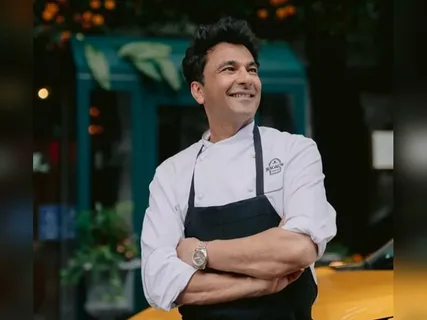
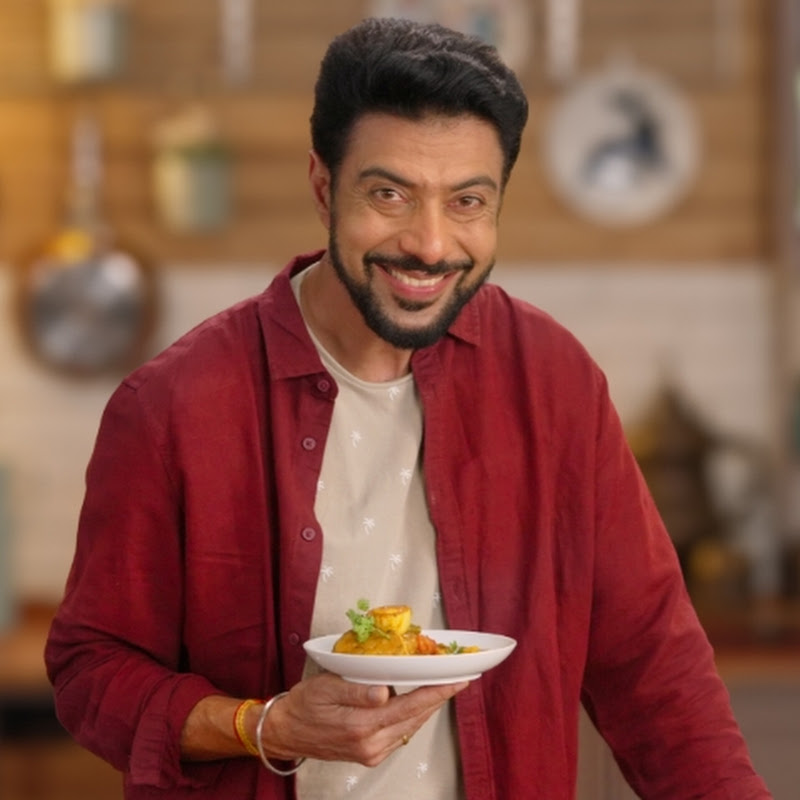

Chefs

Chef Vikas Khanna

Chef Ranbeer Brar

Chef Kunal Kapur


Vikas Khanna is an acclaimed Indian Michelin-star chef, restaurateur, author, and humanitarian based in New York City. Born in Amritsar with a leg deformity, he overcame early life challenges to become a global culinary figure, known for hosting MasterChef India and for his extensive philanthropic work, including the #FeedIndia initiative.
He graduated from the Manipal Academy of Higher Education in 1991 and studied at the Culinary Institute of America. He earned a Michelin star for his restaurant Junoon in New York City.
Khanna is a household name in India, largely through his role as a judge on MasterChef India and Junior MasterChef India.
During the COVID-19 pandemic, he initiated #FeedIndia, which served millions of meals across India.
He has written over 25 books, including the world's most expensive cookbook, UTSAV. He also produced the documentary series Holy Kitchens.
Raised in Amritsar, his cooking was heavily influenced by his grandmother and the community kitchen (langar) at the Golden Temple.

Ranveer Brar (born February 8, 1978) is a renowned Indian celebrity chef, television host, author, and restaurateur known for MasterChef India and his expertise in Indian cuisine, particularly Lucknawi dishes. He became India's youngest executive chef at age 25 and has authored books, produced food films, and acted in projects like Modern Love Mumbai.
Born in Lucknow, he was inspired by local street vendors and started his career after training at the Institute of Hotel Management (IHM) in Lucknow.
He served as Executive Chef at Radisson Noida at age 25 and has operated restaurants in India and the US, including 'Banq' in Boston, which was recognized for excellence. He also experienced a challenging period of bankruptcy in Boston.
Known for hosting shows like The Great Indian Rasoi and Breakfast Xpress, and as a prominent judge on MasterChef India.
Focuses on reviving lost recipes, sustainable, and local food sources.
Recipient of the LFEGA "Food Entertainer of the Year" for 2018, and honored by the James Beard Foundation.

Kunal Kapur is a renowned Indian celebrity chef, restaurateur, and television personality known for judging MasterChef India and Junior MasterChef India. Born in New Delhi, he has worked with top hotel chains like The Leela and Taj, and authored cookbooks. He specializes in Indian cuisine, focusing on traditional, regional, and, more recently, modern, nutritious, and sustainable cooking.
Served as a host/judge for MasterChef India (seasons 1–3, and 9) and Junior MasterChef India.
Focuses on blending Indian flavors with global techniques, often highlighting the historical context of dishes.
Founder of restaurants, including PINCODE in Delhi and Dubai, and consultant for The Leela Group.
Received the Sir Edmund Hillary Fellowship (2012) and the Dr. S. Radhakrishnan National Media Network Award (2014).
Actively involved in training underprivileged youth in cooking and supporting sustainable, local produce initiatives.
Harpal Singh Sokhi is a renowned Indian celebrity chef, restaurateur, and television personality known for the catchphrase "namak shamak". He gained fame through the hit show Turban Tadka on FoodFood channel and launched the restaurant chain Karigari. Born in 1966 in Kharagpur, he is celebrated for blending humor with authentic Indian, especially Punjabi, cuisine.
He started his career in 1987 as a trainee cook at The Oberoi in Bhubaneswar after completing a diploma from IHM Bhubaneswar. He initially wanted to be a fighter pilot but pivoted to hotel management.
He hosted his first show, Khana Khazana, on Zee TV in 1993. He later gained massive popularity with Turban Tadka on FoodFood, recognized as one of India's top celebrity chefs. Other shows include Kitchen Khiladi, Sirf Tees Minute, and Desh da Swaad.
He launched his own restaurant chain, Karigari, which focuses on authentic Indian cuisine. He also conceptualized the restaurant Khazana in Dubai in 1998.
Known as the "Energy Chef of India," he specializes in Indian cuisine with a focus on Ayurveda-based cooking to enhance nutritional value.
He has been honored with titles such as "Best Chef of the Year" (2016, 2017) by the Indian Restaurant Congress and Food Food, as well as the Iconic Achievers Award in 2018.
He participated in Jhalak Dikhhla Jaa 9 and appeared in the Bollywood movie Bank Chor. He has also written columns and books, including Royal Hyderabadi Cooking with Sanjeev Kapoor.